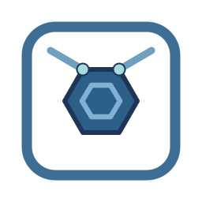

Seven explainer clips. They play here in the browser - no download needed. Every clip is captioned, so sound is not required.
The whole product in one clip: the four pain points, then spec-builder writing the contract, harness-bootstrap building the harness, the delivery loop running inside it, and the payoff. Each pain visibly flips from red to green as its fix lands. Closes with harness-view answering the question it exists for: how do you know it is actually wired right.
An unconstrained agent hallucinates, forgets on compaction, and bills at the top tier. Two skills build a harness.
spec-builder writes the contract; harness-bootstrap reads the code and scaffolds in ~0.2s; then the task loop runs.
Deny list, hooks, the spawn boundary, path-scoped rules, review gates. The guardrails are shell scripts, so Opus to Haiku is identical safety.
Raw input to a contract: elicit, confirm the FR list first, scaffold the selected sections (the core six always), fill them in order, then the traceability check. Nothing is invented - anything unstated becomes a flagged AS-nn or OI-nn. Mirrors diagram 5 in docs/FLOWS.md.
Mode, then the mandatory codebase analysis and Inventory Report, intake and the tool questionnaire, a roster with explicit model and effort, skills matched to the stack and wired in once you choose them, the scaffold that reports ADDED / KEPT / CONFLICT and never clobbers, orchestration wiring, and building both knowledge graphs with their HTML exports. Mirrors diagram 2 in docs/FLOWS.md.
The operating flow end to end, mirroring the overview figure: input in whatever shape it arrives, one contract, rules and hooks coming down into the agents, three ordered outputs, and state that is written rather than supplied. Then the step most kits skip: a roster of 7 to 15 of the 16 seats derived from the contract and the modules that exist, rather than every agent and a hundred skills installed before anyone read the code. Then the three mechanisms that keep it honest, each with the problem it solves: Skill Discovery reads this project's manifests to find skills that match its stack, Skill Wire connects a chosen skill to the agent seat that needs it, and harness-view answers whether any of it is actually wired right.
7本の解説クリップ。ブラウザでそのまま再生できます - ダウンロード不要。すべてのクリップにキャプションが付いているため、音声がなくても内容を追えます。
プロダクト全体を1本のクリップで: 4つの課題、そしてspec-builderが契約書を書き、harness-bootstrapがハーネスを構築し、その内側でデリバリーループが回り、成果に至るまで。各課題は解決するたびに赤から緑へと目に見えて切り替わります。最後はharness-viewが存在意義そのものの問い - 実際に正しく配線されているとどう分かるか - に答えて締めくくります。
制約のないエージェントは要件を勝手に作り、圧縮で忘れ、最上位モデル階層で課金される。2つのスキルがハーネスを構築する。
spec-builderが契約書を書き、harness-bootstrapがコードを読んで約0.2秒でスキャフォルドし、その後タスクループが回る。
拒否リスト、フック、起動境界、パススコープルール、レビューゲート。ガードレールはシェルスクリプトなので、OpusからHaikuに替えても安全性は同一。
生の入力から契約書へ: ヒアリング、まずFR一覧を確認、選択したセクションをスキャフォルド(コア6は常に)、順番に埋め、トレーサビリティチェック。何も作らない - 書かれていないことはすべてAS-nnかOI-nnとしてフラグが立つ。docs/FLOWS.mdの図5に対応。
モード選択、必須のコードベース分析と棚卸しレポート、インテイクとツール質問、model・effort明示のロースター、スタックに合わせて絞り込み選んだら配線されるスキル、ADDED / KEPT / CONFLICTを報告し決して上書きしないスキャフォルド、オーケストレーションの配線、そして両方のナレッジグラフとHTML書き出し。docs/FLOWS.mdの図2に対応。
概要図に対応した運用フローの全体像。来た形のまま入る入力、一つの契約、上から降りてくるルールとフック、秩序ある三つの成果物、そして与えられるのではなく書かれる状態。続いて、多くのキットが飛ばす工程: 誰かがコードを読む前にエージェント全種とスキル百個を入れるのではなく、契約と実在するモジュールから16席のうち7〜15席を導く。さらに、それを健全に保つ三つの仕組みを、それぞれが解く課題とともに。スキル探索はこのプロジェクトのマニフェストを読んでスタックに合うスキルを見つけ、スキル配線は選ばれたスキルを必要とするエージェントの席につなぎ、harness-view は本当に正しく配線されているのかに答えます。